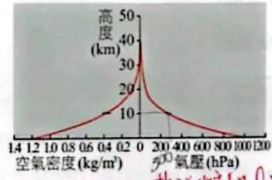

考點 1：氣壓與空氣質量
- 氣壓是單位面積上方空氣柱的重量；高度愈高，頭頂剩下的空氣愈少，所以氣壓愈低。
- 低空空氣較密，因此相同高度差內，低空的氣壓降幅通常比高空大。標準氣壓約 1013 hPa，也等於 76 cmHg。
- 某高度以上的空氣重量占比＝該高度氣壓÷地面氣壓；以下占比＝（地面氣壓－該高度氣壓）÷地面氣壓，因為氣壓差代表兩高度之間空氣的重量。
- 讀圖先確認高度、氣壓的座標與單位，再用同一張圖的讀值計算。
附圖為大氣壓力與離地高度的關係圖，下列有關氣壓的敘述，何者錯誤？
(A) 利用氣壓與高度的相關性，氣壓計也可以作為高度計 (B) 地面的氣壓相當於高約 76 公分水銀柱底面承受的壓力 (C) 離地面 8 公里處的高空氣壓，大致已小於 0.5 大氣壓 (D) 距地面愈高，其氣壓隨高度的變化率愈來愈大
看答案與詳解收起
答D。
解認出考點：看到氣壓與高度曲線，先讀座標，再比較相同高度差的氣壓降幅。
- (A) 對：氣壓與高度一一對應，飛機、登山錶就是用氣壓推高度。
- (B) 對：1 大氣壓＝76 cmHg。
- (C) 對：圖上 8 公里處約 27 cmHg，小於 0.5 大氣壓（38 cmHg）。
- (D) 錯：曲線愈往上愈「立起來」，同樣上升 1 公里，氣壓減少得愈來愈少 → 變化率愈來愈小（高空空氣稀薄）。
氣壓可以代表單位面積上方空氣柱的重量。某一氣象站的海拔高度大約是 3000 公尺，平均氣壓大約是 700 百帕，在 3000 公尺高度以下的大氣層，約占整個大氣層空氣重量的多少百分比？
(A) 10 (B) 20 (C) 30 (D) 40 (E) 50
看答案與詳解收起
答C。
解認出考點：題目問測站高度以下的重量占比，先用地面氣壓減去測站氣壓。
- 海平面氣壓約 1013 百帕＝整層大氣的重量。
- 3000 公尺處 700 百帕＝3000 公尺以上的空氣重量。
- 3000 公尺以下：(1013－700)÷1013 ≈ 0.31 → 約 30%。
小結某高度以下的空氣比例＝(地面氣壓－該高度氣壓)÷地面氣壓。
下一題用這張圖。先確認縱軸是高度；底部左半邊讀密度、右半邊讀氣壓。

氣壓、空氣密度隨高度的變化（底部左右刻度不同）原講義PDF第4頁・印刷第106頁・點圖放大
在靜力平衡的假設下，依同一張圖估計：距地面10公里以內的空氣，占此地上空整根空氣柱質量的百分比約為多少？
看答案與詳解收起
答約75%；圖讀值有誤差，約74–76%皆接近。
解認出考點：看到「10 公里以內」與氣壓圖，先讀地面和 10 公里的氣壓，再求兩者差值。
先辨別上下：10公里處的氣壓表示「10公里以上」那段空氣的重量，題目卻問「10公里以下」。
以圖上地面約1000 hPa、10公里約250 hPa估算：
10公里以下占比＝(1000−250)÷1000＝0.75＝75%。
若依另一頁標示採地面1013 hPa、高空250 hPa，則為 763÷1013≈75.3%；若原圖讀值略不同，結果會有小差異。原頁手寫74%不必當成精確常數。
若直接用250÷1000＝25%，求到的是10公里以上，剛好和題目相反。
小結先算上方剩多少，再用總量扣掉，才是指定高度以下。
記住：氣壓代表上方空氣重量；求下方占比要先相減。
考點 2：大氣分層與溫度成因
- 依溫度由下往上分為對流層、平流層、中氣層、增溫層；平均溫度趨勢依序為降、升、降、升。
- 對流層主要由受太陽加熱的地表加熱，因此愈往上通常愈冷；水氣與天氣變化主要集中在這裡。
- 平流層的臭氧吸收紫外線，使上部增溫、結構較穩定；臭氧是微量氣體，水氣通常比近地面少。
- 增溫層氣體吸收高能紫外線和 X 射線而升溫；但空氣稀薄，溫度計的讀數也受日照及散熱影響。
- 電離層橫跨中氣層上部與增溫層，可影響部分無線電波傳播；它依電離狀態命名，與溫度分層不同。
4-綜 歷屆 2學測・溫度垂直結構的成因（應選2項）依據大氣平均垂直結構，在對流層中溫度隨高度上升而降低，每公里約降 6.5°C；但在對流層頂溫度不再降低，大致維持一定；最上層的大氣溫度則隨高度增加而增加。形成這種結構的主要原因為哪些？
(A) 因為太陽輻射中的無線電波加熱了最上層的大氣 (B) 因為太陽輻射中的紫外線、X 射線加熱了最上層的大氣 (C) 因為臭氧吸收太陽輻射中的紫外線，增加了溫度，使對流層頂的溫度大致維持一定 (D) 因為人類的活動使二氧化碳增加，造成溫室效應，使最上層的大氣溫度增加 (E) 因為大氣的對流活動，將地面附近的能量帶至對流層頂，使對流層頂的溫度大致維持一定
看答案與詳解收起
答B、C。
解認出考點：看到對流層頂和最上層的溫度結構，先分別找出上下兩處吸收輻射的氣體。
- 最上層（增溫層）：氣體吸收太陽的紫外線、X 射線而升溫（B 對）；無線電波幾乎不被吸收（A 錯）。
- 對流層頂以上（平流層）有臭氧吸收紫外線加熱，使溫度不再隨高度下降（C 對）。
- (D) 溫室氣體主要讓對流層增溫，與最上層無關。
- (E) 對流把熱往上送，但對流層內溫度仍隨高度遞減；對流層頂停止降溫的原因是上方臭氧加熱，不是對流。
小結每一層的熱源：對流層－地面；平流層－臭氧吸收紫外線；增溫層－紫外線、X射線。
附圖為地球大氣溫度垂直分布圖（由下而上：甲、乙、丙、丁），關於各層的敘述，哪些正確？
(A) 天氣變化主要發生在高度約 20 公里的範圍內，即甲層與乙層的下部 (B) 將某地百葉箱中之水銀溫度計拿至 120 公里高空，其溫度指標會立即顯示約 70 度的高溫 (C) 乙層又可稱臭氧層，且愈上層臭氧含量愈高 (D) 甲層主要能量來自地表 (E) 丙層與丁層均有氣體游離的現象，地表可仰賴高層游離的氣體來做無線電波通訊
看答案與詳解收起
答D、E。
解認出考點：看到各層溫度剖面，先依高度的溫度變化標出四層，再逐項核對現象。
- (A) 錯：天氣只發生在甲層（對流層，約 12 公里內）。
- (B) 錯：增溫層空氣極稀薄，氣體分子溫度高但能傳給溫度計的熱很少，溫度計不會顯示高溫。
- (C) 錯：臭氧在平流層約 20～30 公里最多，不是愈上層愈多。
- (D) 對：對流層主要由地面加熱。
- (E) 對：電離層從中氣層上部延伸到增溫層，能反射無線電波。
飛機沿平流層底部飛行，以下判斷該處的大氣性質。
承上題，飛機位於平流層。下列哪項敘述正確？
- 氣壓約為800 hPa。
- 臭氧所占比例比氧氣高。
- 大氣垂直運動比地表附近劇烈。
- 水氣含量比地表附近低。
- 空氣多呈游離狀態。
看答案與詳解收起
答D，水氣含量比地表附近低。
解認出考點：題目指定飛機位於平流層，先比較該層與近地面的水氣及垂直運動。
水氣主要集中在低層對流層，進入平流層的空氣通常很乾，所以D符合本題條件。
| 選項 | 判斷理由 |
|---|
| A | 800 hPa仍是較低空的氣壓，與題設平流層不合；應依圖中高度讀對應氣壓。 |
| B | 臭氧雖在此相對集中，仍是微量氣體，不會超過約21%的氧氣。 |
| C | 平流層平均結構穩定，強烈垂直對流通常較不發達。 |
| E | 平流層的空氣仍主要為中性，不能把它當成高空電離區。 |
小結「臭氧較集中」是在比較不同高度的臭氧，不是在說臭氧多過氧氣。
記住：先認溫度變化的層次，再對應熱源與水氣分布。
考點 3：露點與相對溼度
- 飽和是空氣中的實際水氣壓達到該氣溫的飽和水氣壓；氣溫愈高，飽和水氣壓愈大。
- 露點是水氣壓不變時，空氣降溫到飽和的溫度；露點愈高，代表實際水氣壓愈高。
- 相對溼度＝實際水氣壓÷當時氣溫的飽和水氣壓×100%；它比較的是距離飽和有多近。
- 比較氣溫與露點圖時，差距愈小通常愈接近飽和；若實際水氣變化不大，清晨氣溫低時相對溼度通常較高。
在空氣中的水氣量不變的情況下，溫度降低而使空氣中的水氣量達到飽和之溫度稱為露點。甲～戊五個城市的氣溫和露點如下表。哪一個城市的相對溼度最高？
| 城市 | 甲 | 乙 | 丙 | 丁 | 戊 |
|---|
| 氣溫（°C） | 35 | 34 | 30 | 20 | 20 |
|---|
| 露點（°C） | 32 | 30 | 29 | 14 | 10 |
|---|
(A) 甲 (B) 乙 (C) 丙 (D) 丁 (E) 戊
看答案與詳解收起
答C。
解認出考點：看到城市的氣溫與露點表，先逐一比較兩者差距。
氣溫與露點差距愈小，愈接近飽和，相對溼度愈高。差距：甲 3、乙 4、丙 1、丁 6、戊 10 → 丙最高。
承上表，哪一個城市單位體積空氣中所含的水氣最多？
(A) 甲 (B) 乙 (C) 丙 (D) 丁 (E) 戊
看答案與詳解收起
答A。
解認出考點：題目承接前一題的城市表，問實際水氣時先比較各城市露點。
實際水氣量只看露點：露點愈高，水氣愈多。甲的露點 32°C 最高 → 甲。
小結水氣多寡看露點；潮不潮溼（相對溼度）看氣溫和露點的差。
一般來說，要讓空氣達到飽和的方式有增加水氣和降低溫度兩種方式。露點是一種溼度的表示法，它可以反映空氣中實際水氣含量的多寡。如果沒有特別天氣系統影響的情況下，一天中溫度與露點在什麼時間最接近？
(A) 中午 (B) 午後 (C) 傍晚 (D) 清晨 (E) 早上十點附近
看答案與詳解收起
答D。
解認出考點：看到一天中氣溫和露點最接近的時刻，先找一般情況下氣溫最低的時段。
一天中水氣量（露點）變化不大，氣溫變化大。氣溫最低在清晨日出前後，此時氣溫最接近露點，相對溼度最高，也最容易起霧、結露。
附圖為某測站某日逐時氣溫與露點溫度變化圖，關於該測站當日的天氣狀況描述，下列哪些正確？
(A) 當日 6 時實際水氣含量最高 (B) 當日 6 時相對溼度最高 (C) 當日 12 時相對溼度最低 (D) 當日 14 時空氣中飽和水氣含量最高 (E) 當日清晨有濃霧發生
看答案與詳解收起
答B、D。
解認出考點：看到逐時氣溫與露點曲線，先分清兩條線，再比較各時刻露點及溫差。
- (A) 錯：水氣量看露點，露點最高在 12～14 時左右，不是 6 時。
- (B) 對：6 時氣溫最低、與露點差距最小（約 2°C）→ 相對溼度最高。
- (C) 錯：差距最大約在 14 時（約 7°C），不是 12 時。
- (D) 對：飽和水氣量只看氣溫，14 時附近氣溫最高。
- (E) 錯：清晨氣溫仍比露點高約 2°C，沒有達到飽和，不會有濃霧。
記住：露點看實際水氣，相對溼度還要看氣溫。
考點 4：乾溼球溫度計
- 乾球直接測氣溫；溼球包有溼紗布，水蒸發吸熱，因此溼球讀數不高於乾球。
- 空氣愈乾燥，水愈容易蒸發，溼球降溫愈多，所以乾溼球溫差通常愈大。
- 未飽和時乾球溫度＞溼球溫度＞露點；飽和時三者相等，因為水不再淨蒸發。
- 飽和時相對溼度都是 100%，但溫度較高的飽和空氣仍可有較多水氣。
已知甲地氣溫為17°C，水氣達飽和；乙地乾球溫度為20°C，露點溫度17°C。請問：
- 甲地乾球溫度、溼球溫度各為何？
- 乙地溼球溫度可能為？ (A)20°C (B)18.5°C (C)17°C
看答案與詳解收起
答①乾球＝溼球＝17°C。②B，18.5°C。
解認出考點：看到飽和與未飽和兩地，先各自寫出乾球、溼球和露點的大小關係。
第1題：水氣已達飽和時，乾球溫度＝溼球溫度＝露點溫度，三者相等，都是17°C。
第2題：乙地水氣未達飽和（乾球20°C≠露點17°C），這時三者的大小關係是「乾球 ＞ 溼球 ＞ 露點」，即 20°C ＞ 溼球 ＞ 17°C。選項中只有(B)18.5°C落在這個範圍內；(A)20°C會跟乾球相等（代表飽和，矛盾），(C)17°C會跟露點相等（也代表飽和，矛盾）。
小結飽和時三溫相等；未飽和時乾球＞溼球＞露點，答案要落在這個嚴格介於中間的範圍。
乾、溼球溫度計可用來測量空氣溼度。若甲地測得的乾、溼球溫度皆為 30°C，而乙地乾、溼球溫度皆為 20°C。下列敘述哪些正確？
(A) 兩地的相對溼度一樣 (B) 甲地的相對溼度較高 (C) 甲地的相對溼度較低 (D) 兩地的水氣含量相等 (E) 甲地的水氣含量較多 (F) 甲地的水氣含量較少
看答案與詳解收起
答A、E。
解認出考點：兩地乾球與溼球各自相等，先判斷飽和狀態，再比較兩地溫度。
- 乾球＝溼球 → 已飽和 → 兩地相對溼度都是 100%（A 對）。
- 飽和時露點＝氣溫：甲露點 30°C、乙 20°C → 甲水氣較多（E 對）。
垂文分別在 9 月 1 日與 9 月 2 日做乾溼球實驗，結果如下圖（接裝水容器的是溼球），請問下列選項何者錯誤？
(A) 由於乾球與溼球之平均溫度均為 29°C，因此兩日氣溫均為 29°C (B) 9 月 1 日之飽和水氣壓較低 (C) 9 月 2 日測量時之相對溼度較低 (D) 溼球溫度比乾球溫度低的原因為水蒸發會吸熱 (E) 這兩日水氣均未達飽和
看答案與詳解收起
答A。
解認出考點：看到兩天的乾溼球圖，先辨認接水容器的是哪一球，讀出乾球氣溫和兩球溫差。
- (A) 錯：氣溫就是乾球的讀數，不是乾、溼球的平均。
- (B) 對：9 月 1 日乾球較低 → 飽和水氣壓較低。
- (C) 對：9 月 2 日乾、溼球溫差較大 → 較乾燥。
- (D) 對。(E) 對：兩天乾、溼球都不相等 → 都沒飽和。
記住：乾球量氣溫，乾溼球差距反映蒸發與溼度。
考點 5：雲、霧、露、霜的形成
- 水氣達飽和可經降溫或增加水氣；自然界常由降溫達飽和，再凝結成水滴或凝華成冰晶。
- 高空懸浮的水滴或冰晶是雲，接近地面的叫霧；附著物體表面的液態水是露，冰晶是霜。
- 空氣中的氣膠可作凝結核，幫助水氣聚集；冷物表面若低於周圍空氣的露點，水氣可能在表面凝結。
- 地面輻射冷卻、暖溼空氣流過冷海面，或氣流受熱、地形及輻合抬升，都可能使空氣冷卻成雲霧；下沉則壓縮增溫，不易凝結。
附圖是水氣含量和溫度的關係圖，粗線為飽和曲線，甲、乙、丙和丁的箭頭方向分別代表大氣中的水氣要達到飽和的途徑。關於自然現象「露」的形成，主要是透過哪一種途徑而達到飽和？
甲：溫度固定時，增加水氣而達飽和；乙：經升高溫度及減少水氣量而達飽和；丙：水氣含量不變時，降低溫度而達飽和；丁：經降低溫度及增加水氣而達飽和。
(A) 甲 (B) 乙 (C) 丙 (D) 丁
看答案與詳解收起
答C。
解認出考點：看到飽和曲線與露的形成，先找夜間冷卻時溫度和水氣量各如何改變。
露：夜間地面輻射冷卻，貼近地面的空氣水氣量不變、溫度下降到露點，水氣凝結在物體表面 → 丙（水平往左走到飽和曲線）。
學校 K 館溫度設定為 25°C 恆溫，某日室外氣溫 34°C、相對溼度 95%，另一日室外氣溫 18°C、相對溼度同為 95%。戴眼鏡的其昌從 K 館走出去時，哪時候鏡片較易霧掉？
(A) 34°C 時 (B) 18°C 時
看答案與詳解收起
答A。
解認出考點：看到冷鏡片走到室外，先比較鏡片溫度與室外空氣的露點。
- 鏡片剛出門時約 25°C；室外空氣碰到鏡片被冷卻，若降到露點以下就在鏡片上凝結。
- 34°C、95% 的露點約 33°C，高於 25°C → 碰到鏡片就凝結起霧。
- 18°C、95% 的露點約 17°C，比鏡片還冷 → 不會凝結。
下列哪種情形最不易有雲霧產生？
(A) 氣流沿著迎風面上升 (B) 暖溼空氣吹過冷海面 (C) 空氣受地表溫度加溫而上升 (D) 地表空氣水平往低壓中心輻合 (E) 地表高壓中心空氣往外輻散
看答案與詳解收起
答E。
解認出考點：題目問最不易形成雲霧的氣流，先判斷各情境是冷卻、上升還是下沉。
高壓中心地面輻散，必有上方空氣下沉補充 → 壓縮增溫 → 不易成雲。A、C、D 都造成上升冷卻；B 是平流霧。
若空氣中水氣含量不變，下列哪些方式最不可能發生水氣凝結現象？
(A) 氣流受到地形抬升，沿著迎風坡爬升 (B) 暖空氣吹過冷海面 (C) 地表輻射冷卻導致空氣溫度改變 (D) 空氣在地面高壓區的上空向下沉 (E) 空氣塊過山後產生落山風
看答案與詳解收起
答D、E。
解認出考點：水氣含量不變且問凝結，先找哪些過程會讓空氣降溫或增溫。
水氣不變時，要凝結只能靠降溫。A（上升絕熱冷卻）、B（被冷海面冷卻，平流霧）、C（輻射冷卻，輻射霧、露）都會降溫。D、E 都是空氣下沉、壓縮增溫，離飽和愈來愈遠。
記住：先看空氣是否冷卻至飽和，再看水滴或冰晶的位置。
考點 6：絕熱冷卻與空氣塊上升、翻山
- 絕熱指空氣塊不與環境交換熱量；上升時外界氣壓降低，空氣塊膨脹作功而降溫，下沉則壓縮升溫。
- 未飽和上升通常以乾絕熱率約 10°C／公里降溫；題目若給露點每公里下降 2°C，兩者差距每公里縮小 8°C，直到相等而成雲。
- 飽和後水氣凝結釋放潛熱，部分抵銷降溫，所以溼絕熱降溫較慢；用題目指定的每公里降溫值，飽和時氣溫與露點相等。
- 翻山時分段計算：先算成雲高度，再算飽和上升；若水分已降落，背風坡下沉依未飽和的乾絕熱率增溫。
- 環境平均氣溫遞減率是不同高度的環境氣溫差，不是空氣塊的絕熱率；題目給哪一種就用哪一種。
已知未飽和空氣塊的溫度直減率約為 10°C/公里，飽和空氣塊的溫度直減率約為 6°C/公里。若觀測員在地面空地量到氣溫、露點溫度皆為 30°C，則在地面的一個空氣塊，若不與環境交換熱量，上升到 2 公里高度時，其氣溫、露點溫度為下列何者？
(A) 氣溫 10°C、露點 10°C (B) 氣溫 10°C、露點 18°C (C) 氣溫 18°C、露點 18°C (D) 氣溫 18°C、露點 30°C (E) 氣溫 30°C、露點 30°C
看答案與詳解收起
答C。
解認出考點：題目給地面氣溫與露點相同，先判斷空氣塊出發時是否飽和。
氣溫＝露點 → 一開始就飽和，一路用 6°C/km：30－6×2＝18°C。上升時持續飽和（多的水氣凝結掉），露點＝氣溫＝18°C。
如果不與外在環境交換能量，當未飽和時，一個空氣塊每上升 1000 m，其溫度會降低約 10°C，露點會降低約 2°C；而飽和後，每上升 1000 m 其溫度會降低約 5°C。如圖，有一座高度 2000 m 的山，氣流在迎風面受地形抬升、沿坡面上升，當水氣達到飽和後，開始成雲和降水。如果在迎風面山腳下（甲地）觀測到氣溫為 30°C，露點為 22°C。假設空氣塊由甲地到達山頂（乙地），再下降到背風面山腳下（丙地）的過程，不與外在環境交換能量，則下列敘述哪些正確？
(A) 空氣塊開始成雲時的露點約為 15°C (B) 空氣塊到達乙地的溫度約為 15°C (C) 空氣塊到達乙地的露點約為 15°C (D) 空氣塊到達丙地的溫度約為 28°C (E) 空氣塊到達丙地的溫度約為 35°C
看答案與詳解收起
答B、C、E。
解認出考點：看到迎風坡、山頂與背風坡，先用氣溫和露點的下降率求成雲高度。
- 成雲高度：30－10h＝22－2h → h＝1 km，此時溫度＝露點＝20°C（A 錯）。
- 1→2 km 已飽和：20－5×1＝15°C；飽和時露點＝溫度 → 乙地溫度、露點都是 15°C（B、C 對）。
- 下山 2 km，水已降掉、不再飽和 → 每公里增溫 10°C：15＋20＝35°C（E 對、D 錯）。
小結焚風：上山前段降溫快、後段降溫慢；下山一路快速增溫 → 背風面又乾又熱。
法國數學家帕斯卡利用兩支相似的水銀氣壓計，將一支帶到多姆山的山頂，一支留在山腳下，發現山頂的氣壓計高度比山腳下的低了 7.6 公分。假設山腳下的氣壓為一大氣壓（約 1013 百帕），氣溫約 20°C，試由附圖判斷多姆山高度及山頂的氣溫分別為多少？（平均溫度遞減率為每上升 100 公尺下降 0.65°C）
(A) 約 500 公尺高，山頂氣溫約 15.0°C (B) 約 500 公尺高，山頂氣溫約 17.5°C (C) 約 1000 公尺高，山頂氣溫約 10.0°C (D) 約 1000 公尺高，山頂氣溫約 13.5°C (E) 約 1500 公尺高，山頂氣溫約 10.0°C
看答案與詳解收起
答D。
解認出考點：看到水銀柱降低量和氣壓高度圖，先求山頂氣壓，再讀高度並套用題設的環境遞減率。
- 山頂水銀柱：76－7.6＝68.4 cm＝0.9 大氣壓 → 1013×0.9 ≈ 912 百帕。
- 查圖：約 900 百帕對應約 1000 公尺 → 山高約 1000 公尺。
- 氣溫：20－0.65×(1000÷100)＝20－6.5＝13.5°C。
小結水銀柱降 10% → 氣壓降 10% → 低空大約上升 1 公里。
一個未飽和空氣塊在上升過程中，假設不與環境交換熱量，每上升 1 公里，溫度約降低 10°C；露點每上升 1 公里約降低 2°C。假設有五個地點，在高度為 0 時其溫度和露點如下表，若各自的空氣塊上升至附圖的高度時，哪些地點較可能開始形成雲層的雲底？
| 地點 | 甲 | 乙 | 丙 | 丁 | 戊 |
|---|
| 溫度（°C） | 18 | 22 | 26 | 30 | 34 |
|---|
| 露點（°C） | 12 | 14 | 18 | 18 | 14 |
|---|
(A) 甲 (B) 乙 (C) 丙 (D) 丁 (E) 戊
看答案與詳解收起
答B、E。
解認出考點：看到各地氣溫、露點與抬升高度，先求每地溫差，再算剛達飽和的高度。
- 溫度與露點每公里差距縮小 10－2＝8°C → 成雲高度（雲底）＝(溫度－露點)÷8 km。
- 甲 6÷8＝0.75；乙 8÷8＝1；丙 8÷8＝1；丁 12÷8＝1.5；戊 20÷8＝2.5 km。
- 圖中上升高度：甲 0.5、乙 1、丙 1.5、丁 2、戊 2.5 km。
- 剛好到達雲底的是乙、戊；甲還沒到，丙、丁已超過雲底（雲底在更低處）。
記住：先找飽和轉折點，再按每一段的條件計算。
考點 7：風的三種力與判斷風向
- 氣壓梯度力垂直等壓線，由高壓指向低壓；等壓線愈密，梯度力通常愈大。
- 科氏力使運動中的空氣在北半球向前進方向右偏，且垂直風向；同緯度下風速愈快，科氏力愈大。
- 高空摩擦小，地轉風的梯度力與科氏力平衡，風平行等壓線；北半球背對風來向時，低壓在左。
- 地面摩擦力與風向相反，會減慢風速及科氏力，因此風斜穿等壓線吹向低壓；摩擦愈大，穿越角度通常愈大。
- 風向按風的來向命名：例如北風是由北往南吹；圖上箭頭若表示流動方向，讀名稱前要先反過來。
十九世紀中期，荷蘭氣象學家白貝羅發現：在北半球，若背對風的來向，則高壓在其右邊，低壓在左邊。但後來發現，這個經驗定律比較適合應用在航空或航海上，而不太適合在陸地上使用。其最主要的原因為何？
(A) 因為海上或空中的氣象測站較少，使用經驗定律比較方便 (B) 因為海上及空中的摩擦力較小，風向比較不會偏轉 (C) 因為陸地上的氣壓梯度力比較小，風速比較快 (D) 因為陸上氣象資訊更新較快，不必使用經驗定律 (E) 因為航運比陸運更需要氣象資訊
看答案與詳解收起
答B。
解認出考點：題目比較航海、航空和陸地的風向判讀，先比較摩擦力對風的影響。
白貝羅定律其實就是「風平行等壓線」的地轉風。海上、高空摩擦小，風接近平行等壓線，定律準；陸地摩擦大，風斜穿等壓線吹向低壓，夾角大，用這個定律判斷高低壓就會偏差。
如果在赤道以外的地方考慮近地面的風，由於流動的空氣與地面有摩擦力，則下列哪一項敘述是正確的？
(A) 摩擦力使風速降低，科氏力隨之減小 (B) 摩擦力使風速降低，科氏力隨之增大 (C) 摩擦力對風速沒影響，但對科氏力影響很大 (D) 摩擦力對科氏力沒影響，但對風速影響很大 (E) 摩擦力對風速和科氏力都沒有影響
看答案與詳解收起
答A。
解認出考點：看到近地面摩擦力，先判斷風速變化，再推論科氏力變化。
摩擦力與風向相反 → 風速變慢；科氏力大小和風速成正比 → 科氏力也變小。這就是摩擦力「間接」影響風向的原因。
氣壓梯度力和科氏力平衡時所吹的風稱為地轉風。北半球某地高空的地轉風是吹北風，假設從地面到高空的等壓線分布型態不變，則地面風最有可能吹什麼風？
(A) 北風 (B) 東風 (C) 西南西風 (D) 東北東風 (E) 北北西風
看答案與詳解收起
答E。
解認出考點：看到北半球高空地轉風的風名，先換成空氣移動方向，再找低壓側。
- 高空吹北風 → 空氣往南走，等壓線呈南北走向。
- 北半球地轉風：背風而立，低壓在左。面向南方時左手邊是東 → 東邊低壓、西邊高壓 → 梯度力指向東。
- 地面風：從梯度力（往東）往右偏約 60～75° → 往南南東吹 → 從北北西吹來。
- 也可以這樣想：地面風比地轉風「再偏向低壓一點」→ 北風稍微偏向東邊的低壓 → 北北西風。
右圖為北半球某地之地面等壓線分布圖（左上 1008 hPa、右下 1012 hPa），關於 ①～⑧ 之箭頭方向敘述哪些正確？
(A) 此地風向為 ③ (B) 此地面風向所受科氏力方向為 ④ (C) 若高空等壓線分布如地面一樣，高空地轉風方向為 ⑤ (D) 氣壓梯度力方向為 ⑦ (E) 地轉風的科氏力方向為 ②
看答案與詳解收起
答C、D。
解認出考點：看到等壓線和多個方向箭頭，先畫出由高壓垂直指向低壓的梯度力。
- 氣壓梯度力：垂直等壓線、指向低壓（左上）→ ⑦（D 對）。
- 地轉風：由 ⑦ 右偏 90°、平行等壓線 → ⑤（C 對）。
- 地面風：介於 ⑦ 與 ⑤ 之間 → ④（A 錯）。
- 科氏力在風的右方垂直：地面風 ④ 的科氏力約 ⑥（B 錯）；地轉風 ⑤ 的科氏力是 ⑧，與梯度力 ⑦ 相反（E 錯）。
小結梯度力 → 右轉 90° 是地轉風 → 再右轉 90° 是它的科氏力。
記住：先由高壓指向低壓，再依半球與摩擦判斷風。
考點 8：冷熱與氣壓：熱力環流
- 同氣壓下，冷空氣密度較大，因此同樣高度內包含的空氣較重，氣壓隨高度下降較快，等壓面較密。
- 暖氣柱膨脹，等壓面間距較大；在理想熱力環流中，近地面暖區空氣上升、形成低壓，冷區下沉、形成高壓。
- 環流的近地面氣流由冷高壓吹向暖低壓，高空再流回；這是題設中的簡化環流，暖空氣不一定都上升。
- 地面氣壓相同，代表同面積上方空氣柱重量相同；較暖空氣的飽和水氣壓較高。
- 比較海陸風時也要看摩擦：相同緯度及梯度力下，陸地摩擦較大，風較慢、科氏力較小。
假設附圖為溫度不同所導致甲、乙兩地氣壓差異之垂直等壓線分布圖：甲地上方的等壓面間距較大、往乙地逐漸收攏；最低一條等壓面在甲地較低、在乙地較高。關於兩地之敘述何者正確？
(A) 甲地近地面氣壓較高 (B) 乙地近地面氣溫較高 (C) 地面空氣為甲吹向乙 (D) 乙地應有垂直下沉氣流 (E) 甲地近地面附近空氣密度較高
看答案與詳解收起
答D。
解認出考點：看到冷暖氣柱的等壓面間距，先判斷哪一側氣柱膨脹，再比較近地面氣壓。
- 等壓面間距大 → 氣柱受熱膨脹 → 甲地較熱，乙地較冷。
- 近地面：最低的等壓面在乙地比較高 → 同一高度乙的氣壓較大 → 乙地面高壓、甲地面低壓（A 錯）。
- B 錯：乙較冷。E 錯：甲熱空氣密度較小。
- C 錯：地面風由高壓吹向低壓 → 由乙吹向甲。
- D 對：乙地面高壓 → 中心下沉；甲則上升，形成熱力環流。
小結地面：熱 → 低壓、上升；冷 → 高壓、下沉。（高空則相反）
有兩地分別位於緯度 25 度，甲地位於摩擦力較大的陸地，乙地位於海洋，當兩地氣壓梯度力相等時，下列兩地之比較敘述何者正確？
(A) 甲地風速較快 (B) 甲地科氏力較小 (C) 乙地風向與等壓線夾角較大 (D) 乙地科氏力與摩擦力的夾角較小 (E) 甲地科氏力與風向的夾角較小
看答案與詳解收起
答B。
解認出考點：兩地緯度和梯度力相同但海陸摩擦不同，先比較風速，再判斷科氏力與夾角。
- 甲摩擦大 → 風速慢（A 錯）→ 科氏力小（B 對）→ 偏轉少 → 與等壓線夾角大（C 說乙較大，錯）。
- (D)(E) 錯：科氏力永遠垂直風向、摩擦力永遠與風向相反，所以科氏力與風向夾 90°、與摩擦力也夾 90°，兩地都一樣。
小結夾角題：三力之間的固定角度不會變，會變的是風與等壓線的夾角。
今有兩地空氣溫度如圖所示：甲地冷、乙地暖，假設這兩地的地面氣壓值相同，關於此兩地空氣之敘述哪些正確？
(A) 甲地空氣密度較乙地小 (B) 甲地的地表附近垂直等壓線較乙地密集 (C) 乙地為暖空氣，因此中心一定為上升氣流 (D) 乙地單位面積上空氣柱的重量低於甲地 (E) 乙地空氣可容納水氣較多
看答案與詳解收起
答B、E。
解認出考點：題目指定冷暖兩地地面氣壓相同，先利用氣壓相同判斷氣柱重量，再比較密度。
- (A) 錯：冷空氣密度較大。
- (B) 對：密度大 → 氣壓隨高度降得快 → 等壓面靠得近、較密。
- (C) 錯：暖不一定上升，例如副熱帶太平洋高壓又暖又下沉。
- (D) 錯：地面氣壓相同 → 空氣柱重量相同。
- (E) 對：溫度高 → 飽和水氣量大。
記住：先確認比較條件，再由密度、氣壓與摩擦推論。
考點 9：衛星雲圖與氣象雷達
- 可見光雲圖利用雲反射的陽光：雲愈白通常愈厚，需要日照；紅外線雲圖看雲頂溫度，通常愈白表示雲頂愈冷、愈高，日夜可用。
- 兩圖搭配可比較雲厚與雲頂高度；衛星雲圖呈現雲頂，不能直接判斷雲底。
- 雷達主動發射波並接收降水粒子回波；回波強通常與降雨較強有關，但相關不等於固定比例。
- 都卜勒雷達利用回波頻率變化判斷粒子沿雷達方向接近或遠離：接近時回波頻率較高。
- 比較雲圖與天氣圖時，先找雲帶、旋渦與高低壓，再看季風的迎風面；地面高壓通常下沉、少雲。
以下雲圖為同一時刻的可見光與紅外線影像；可見光愈白代表雲愈厚，紅外線愈白代表雲頂愈高。
關於附圖中 A 區域與 B 區域中雲的特色敘述，何者正確？
(A) A 區域應為高壓帶，地面氣流輻合，形成雲雨天氣 (B) B 區域應該有旺盛的上升氣流，形成厚且高聳的積狀雲 (C) A 區域的雲頂比 B 區域高 (D) A、B 兩區域的雲均為薄雲 (E) 兩地的雲底一樣低
看答案與詳解收起
答B。
解認出考點：看到同時刻的可見光與紅外線雲圖，先分別比較各區的雲厚及雲頂高度。
- A：可見光偏白（厚），紅外線暗（雲頂低、溫度高）→ 又厚又低的雲（層狀雲）。
- B：可見光白、紅外線也白 → 又厚、雲頂又高 → 旺盛上升氣流形成的積雨雲（B 對）。
- (A) 高壓是地面輻散、下沉，不會輻合成雲雨 ✗。(C) A 雲頂較低 ✗。(D) 兩區在可見光都不暗，不是薄雲 ✗。(E) 兩種雲圖都只看得到雲頂，無法判斷雲底 ✗。
小結可見光看厚薄、紅外線看高低；兩張都白 → 積雨雲。
附圖一為 2020 年 10 月 9 日早上 7:30 的紅外線衛星雲圖，附圖二為綜合各種天氣觀測所繪出的地面天氣圖，但甲、乙、丙當中有一個地方標示錯誤，請比對兩張圖，下列敘述哪些正確？
(A) 臺灣已受大陸高壓的影響，盛行東北風 (B) 該時刻花蓮地區位於背風面，氣溫應高於同緯度的臺中地區 (C) 甲為高壓沒錯，因為 10 月大陸冷高壓勢力擴張，且高壓中心天氣晴朗少雲 (D) 乙應是錯誤的，已經 10 月了，在那麼高的緯度不可能有颱風 (E) 丙應是正確的，隨著太陽南移，赤道以北海域有機會發展高壓環流
看答案與詳解收起
答A、C。
解認出考點：看到紅外線雲圖配地面天氣圖，先對照雲系與高低壓位置，再判斷季風方向。
- 雲圖：大陸北方少雲 → 甲為高壓合理（C 對）；日本南方有一團圓形密雲 → 乙的颱風正確（D 錯，10 月仍可能有颱風北上）。
- 南海、菲律賓一帶雲很多 → 丙應是低壓或熱帶擾動，標成高壓是錯的（E 錯）。
- 大陸高壓南伸 → 臺灣吹東北風（A 對）；花蓮面向東北風，是迎風面（B 錯）。
圖一為 2004 年 7 月 2 日 7:00 敏督利颱風引進西南氣流時期之臺灣地區雷達回波圖，圖二為 7 月 2 日 0:00～12:00 臺灣各地 12 小時累積雨量分布圖。比較兩張圖，雷達回波的強弱與降雨量之關係為何？
(A) 正比 (B) 正相關 (C) 反比 (D) 負相關 (E) 相關性極低
看答案與詳解收起
答B。
解認出考點：看到雷達回波與累積雨量兩張圖，先比較強回波區與大雨量區的位置。
回波強的地方（臺灣中南部、西南方），累積雨量也大 → 同增同減 → 正相關。但只看兩張圖無法確定是嚴格的「正比」（成固定倍數），所以選正相關。
小結同方向變化但不是固定倍數 → 正相關，不是正比。
承上題，請依據都卜勒效應原理判斷，此時期位於墾丁的都卜勒雷達，其朝向臺灣南部外海雲系所發出的雷達波頻率，與收到的回波頻率相比，有無不同？
看答案與詳解收起
答有不同：收到的回波頻率較高。
解認出考點：承接前題的西南氣流與墾丁雷達，先判斷南方雲系相對雷達是接近或遠離。
西南氣流把臺灣南方、西南方海上的雲系往東北方（朝臺灣、朝墾丁）推，雲系是朝雷達接近，反射回來的波被壓縮 → 回波頻率變高。都卜勒雷達就是用頻率的變化來推算風（降水粒子）朝向或遠離雷達的速度。
記住：可見光看厚、紅外線看雲頂，雷達看降水與運動。
考點 10：天氣圖、鋒面與氣旋
- 等壓線連接同氣壓位置；往中心氣壓升高是高壓，降低是低壓。北半球近地面高壓順時針向外吹、下沉；低壓逆時針向內吹、上升。
- 測站符號的圓圈表示雲量，風桿長線指向風的來向；氣壓簡寫省略前面的 9 或 10 與小數點，要配合附近等壓線還原。
- 冷鋒是冷空氣推進暖空氣，三角形尖端指移動方向；暖鋒用半圓，滯留鋒則是半圓和三角形分列兩側。
- 冷鋒通常較快，追上暖鋒可形成囚錮鋒；北半球溫帶氣旋的低壓中心連接冷、暖鋒，兩鋒之間可有暖區。
- 熱帶氣旋形成於低緯暖海面，通常沒有鋒面；溫帶氣旋形成於中緯度冷暖氣團交界，水平尺度通常較大。
附圖一為天氣符號參考圖，附圖二為臺灣附近的地面天氣圖，已知每 4 hPa 繪一條等壓線，下列敘述何者正確？
圖二中 A 旁手寫的 H 是筆記。
(A) A 處為上升氣流 (B) B 處的氣溫為 18°C (C) B 處的天氣符號氣壓應標示為 240 (D) B 處天氣狀況應為陰雨綿綿 (E) 此處清晨會有濃霧發生
看答案與詳解收起
答C（原頁手寫 D 是錯的）。
解認出考點：看到等壓線與測站符號，先找線距和氣壓增減，再讀氣溫、露點及雲量。
- 等壓線由外往 A 遞增（最外圍 1020），A 是高壓 → 下沉氣流（A 錯）。
- B 左上 19 是氣溫、左下 17 是露點（B 錯）。
- B 在 1020 往內一條 → 1024.0 hPa，省略寫法為「240」（C 對）。
- B 的圓圈是空心的 → 晴天、雲量少，不是陰雨（D 錯）。
- (E) 只憑這張圖無法斷定清晨一定有濃霧。
小結氣壓省略寫法：1024.0 → 240；1013.6 → 136。
附圖為臺灣附近地面天氣圖：大陸上有高壓，一道冷鋒由東北向西南延伸到臺灣北方附近。關於臺灣各地區的天氣現象及圖中鋒面之敘述，哪些正確？
(A) 臺南此時吹西南風 (B) 花蓮此時晴朗高溫 (C) 宜蘭此時又溼又冷 (D) 冷鋒逐漸往西北方向移動 (E) 暖鋒逆時針約繞 180 度後可抵臺灣，此時約夏季 (F) 冷鋒移動速度較暖鋒快，因此冷鋒有機會追上暖鋒
看答案與詳解收起
答C、F。
解認出考點：看到大陸高壓與冷鋒，先讀三角形方向，再判斷臺灣的季風及迎風面。
- 冷鋒後方是大陸冷高壓 → 臺灣吹東北季風。宜蘭在迎風面 → 又溼又冷（C 對）；花蓮也在東北風迎風側，不會晴朗高溫（B 錯）；臺南吹偏北風，不是西南風（A 錯）。
- 冷鋒三角形指向東南 → 往東南移動（D 錯）。
- (E) 錯：暖鋒不會繞一圈到臺灣，冬季也不是夏季。
- (F) 對：冷鋒移動快，追上暖鋒形成囚錮鋒。
北半球有一溫帶氣旋，其地面氣壓與鋒面的分布如附圖所示（丙在低壓中心，甲在東側，丁在西側，乙在中心南方）。下列有關此天氣圖的敘述，何者正確？
原圖上的著色與「冷氣團、暖氣團」等字是手寫筆記。
(A) 甲地點大約吹西風 (B) 乙地點的溫度最低 (C) 丙地點的氣壓最高 (D) 丁地點大約吹西北風 (E) 乙地點的天氣是陰雨天
看答案與詳解收起
答D。
解認出考點：看到北半球溫帶氣旋圖，先找低壓中心及冷暖鋒，再判斷各地風的來向。
- 北半球低壓：地面風逆時針旋入中心。
- 甲在東側：氣流往北走並往內偏 → 吹南風或東南風，不是西風（A 錯）。
- 丁在西側：氣流往南走並往內（東）偏 → 從西北吹來 → 西北風（D 對）。
- 乙在冷鋒前、暖鋒後的暖區，溫度不是最低，天氣多半較好（B、E 錯）。
- 丙是低壓中心，氣壓最低（C 錯）。
小結溫帶氣旋：西側吹北、西北風（冷），暖區在冷暖鋒之間。
記住：先找高低壓中心，再看鋒面、風向和測站符號。
考點 11：臺灣的季節天氣與雨型
- 冬季大陸冷高壓增強，臺灣常吹東北季風；北部、東北部迎風，較易陰雨。
- 5～6 月鋒面常停留在華南到臺灣附近，形成梅雨；夏季常見大陸低壓、太平洋高壓及偏南風，也可能有午後雷陣雨或颱風。
- 夏季陸地因比熱較小而升溫快，較暖的陸地容易形成熱低壓；太平洋高壓中心則盛行下沉，不利雷雨。
- 雷雨通常需要充足水氣與旺盛上升氣流；冷乾氣團或高壓下沉區較不利形成。
- 讀降雨表時，月平均＝全年雨量÷12；某月降雨日平均＝月雨量÷降雨日數。雨跡日數若已包含在降雨日數內，要排除時才相減。
附圖甲～丁為臺灣不同時期之地面天氣圖。關於月份與天氣圖之配對，何者錯誤？
(A) 1 月－甲 (B) 5 月－丙 (C) 7 月－乙 (D) 9 月－丁 (E) 11 月－乙
看答案與詳解收起
答E。
解認出考點：看到四張天氣圖配月份，先分別找冷高壓、鋒面、太平洋高壓及颱風。
- 甲：冷鋒南下 → 冬季（1 月合理）。
- 乙：太平洋高壓籠罩、少雲 → 盛夏（7 月）。
- 丙：低壓帶著鋒面延伸到華南 → 春季、梅雨前後（5 月）。
- 丁：兩個颱風 → 夏秋（9 月）。
- 11 月應是東北季風、冷高壓的型態，不會是乙 → (E) 錯。
小結一張圖只對應一種季節型態，(C)(E) 同樣配乙，必有一錯。
如圖所示之地面天氣圖（大陸上為低壓，太平洋上為高壓），下列有關此時期之敘述何者錯誤？
(A) 此季節可能為夏季 (B) 此時臺灣盛行偏南的風 (C) 大陸會形成低壓是因為陸地比熱小，因此此時期氣溫比海洋的氣溫低 (D) 此季節臺灣易被颱風侵襲 (E) 此時期臺灣西南沿海午後容易有雷陣雨發生
看答案與詳解收起
答C。
解認出考點：看到大陸低壓與太平洋高壓，先判斷季節，再比較海陸升溫速度。
陸地比熱小 → 夏天升溫快 → 陸地比海洋熱 → 空氣受熱膨脹上升，地面形成低壓。(C) 把結果說反了。其餘都是夏季特徵。
雷雨一般較不容易發生在什麼樣的天氣系統或條件中？
(A) 極地大陸氣團中心 (B) 春天的鋒面系統 (C) 梅雨季的西南氣流 (D) 夏日午後旺盛的對流 (E) 太平洋高壓中心
看答案與詳解收起
答A、E。
解認出考點：題目問雷雨不易發生的條件，先檢查各系統是否具備水氣與上升氣流。
雷雨需要旺盛上升氣流＋充足水氣。極地大陸氣團又冷又乾、大氣穩定（A）；太平洋高壓中心盛行下沉氣流（E）→ 都不易有雷雨。鋒面、西南氣流、夏日熱對流都有強烈上升運動。
下表為臺北氣象站 2010 年各月份的總降雨量、降雨日數（含雨跡日數）及雨跡日數統計表，雨跡代表當天降水量小於 0.1 mm。下列敘述何者正確？
| 月 | 1 | 2 | 3 | 4 | 5 | 6 | 7 | 8 | 9 | 10 | 11 | 12 | 總計 |
|---|
| 總降雨量(mm) | 105.3 | 232.6 | 66.5 | 112.5 | 183.9 | 419.6 | 89.1 | 388.5 | 144.2 | 345.4 | 127.3 | 63.4 | 2278.3 |
|---|
| 降雨日數(天) | 16 | 18 | 11 | 21 | 17 | 23 | 13 | 13 | 18 | 24 | 19 | 7 | 200 |
|---|
| 雨跡日數(天) | 1 | 5 | 5 | 3 | 3 | 0 | 1 | 0 | 3 | 5 | 5 | 1 | 32 |
|---|
(A) 臺北測站 2010 年的平均「月降雨量」超過 200 mm (B) 臺北測站冬季的總降雨量高於夏季 (C) 臺北測站 12 月發生降雨日的平均日降雨量為全年最大 (D) 臺北測站 8 月發生降雨日的平均日降雨量大於 6 月 (E) 若排除僅發生雨跡的日數，臺北測站 2010 年降雨日數仍超過半年以上
看答案與詳解收起
答D。
解認出考點：看到月雨量、降雨日及雨跡日數表，先確認各選項要用的總量和分母。
- (A) 2278.3÷12 ≈ 190 mm，沒超過 200 ✗。
- (B) 冬（12、1、2 月）＝63.4＋105.3＋232.6＝401.3；夏（6、7、8 月）＝419.6＋89.1＋388.5＝897.2 → 夏季多 ✗。
- (C) 12 月：63.4÷7≈9.1 mm/天；8 月就有 29.9，不是最大 ✗。
- (D) 8 月 388.5÷13≈29.9；6 月 419.6÷23≈18.2 → 8 月較大 ✓。
- (E) 200－32＝168 天 < 182.5 天（半年）✗。
記住：先認季節系統，再分清雨量、雨日與平均值。
重點對比整理
遇到題目先辨認要比較的量，再用對應的原因或公式判斷。